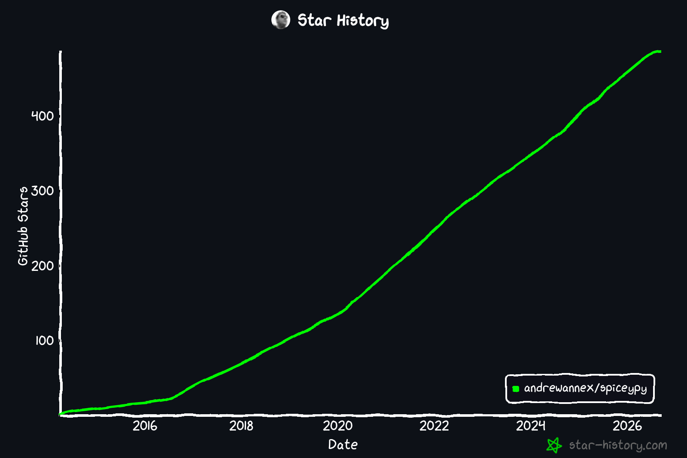

# Accessing NASA Planetary Ephemeris with SpiceyPy Andrew Annex, Ph.D. Pybeach 2026 --- ## About Me * Planetary Scientist: Geology and Remote Sensing * Mars 2020 rover science operations team * VIPER lunar rover science operations team * Geospatial & CV software focus * (current) Senior Software Engineer @ Planet www.andrewannex.com --- # AI Usage Disclosure * Project pre-dates Gen-AI * This slide deck does not * No, I didn't just one-shot this presentation. * AI used to getting deployment correct and getting demos written --- <!-- .slide: class="side-by-side star-slide" --> ## What is SpiceyPy (briefly) * Open source python wrapper library for NASA JPL SPICE I started in 2014 * MIT licensed * macOS windows linux emscripten (new) * Wraps NASA JPL's SPICE toolkit (more on this soon) * Supported by NASA PDART grant 80NSSC25K7040 <a href="https://www.star-history.com/?repos=andrewannex%2Fspiceypy&type=date&releases=&legend=bottom-right"> <p></p> </a> okay, but what is JPL's SPICE toolkit then? <!-- .element: class="full-width" --> --- ## What is SPICE (briefly) * Fortran Software Library for NASA scientists and engineers to work with Spacecraft and Planetary Ephemeris information * Ephemeris information are the positions and orientations of planets and spacecraft as a function of time. * Includes instrument extrinsics (state info) and some intrinsics (focal lengths, coordinate reference frames etc) https://naif.jpl.nasa.gov/naif/spiceconcept.html --- ## What can you do with SPICE (briefly) * coordinate, time, and frame conversions * lookup/replay NASA mission and planetary ephemeris - where was the spacecraft at this date? - where was Phobos (a moon) at this date? * compute viewing geometry info and occultations - when will this asteroid pass in front of this star from this surface point? - what is the illumination geometry at this date at this surface point? https://naif.jpl.nasa.gov/pub/naif/toolkit_docs/C/info/mostused.html --- ## Even more about SPICE * Originally components date to Voyager mission, but SPICE formalized in early 1980's * Developed in F77, translated to C (CSPICE) via f2c * JPL provides Fortran, C, Java, IDL, MATLAB interfaces * Over 600 individual functions https://naif.jpl.nasa.gov/naif/spicehistory.html --- ## How does SPICE work? * Ephemeris data stored in bespoke binary and ascii text files called "kernels" - FK (frame kernel), IK (instrument kernel), LSK (leapseconds kernel) - SPK (Spacecraft and Planet position kernel), PCK (Planetary orientation kernel), CK (camera pointing kernel) * Loads state into kernel pool - functionally an in-memory time & kv database #### more on this later... --- ## What else uses or compares to SPICE? * JPL Horizons (web/telnet/astropy/astroquery) - web-base api, little room for customization * JPL MONTE (not open source) #### SPICE is not STK/GMAT, lower level tool --- ## More on SpiceyPy * ctypes-based wrapper, 600+ functions from CSPICE * readthedocs at spiceypy.readthedocs.io * 99% code coverage, CI/CD since 2014 * new cython submodule (2025) * new emscripten distribution (2026) thanks to PEP 783 (more on this later) --- ## Even more on SpiceyPy * custom cmake script for CSPICE shared library * cython extension built against same shared library * scikit-build-core backend to compile cspice * cibuildwheel in ci runners * github actions workflow and conda-forge for ci/cd * readthedocs and codecov * lots and lots of pytests, at least one per function --- ## SpiceyPy, live in your browser * slide deck uses pyodide via pyscript * this is actual python code and emscripten compiled CSPICE running client side ```python import spiceypy as spice print(spice.tkvrsn("TOOLKIT")) ``` #### tkvrsn returns the version string of the CSPICE toolkit --- ## Emscripten? WASM? Pyodide? PEP 783? Wat? * Emscripten: compiler toolchain that compiles c/c++ to Wasm/js * Wasm: portable binary code your browser can run * Pyodide: CPython distribution/interpreter compiled to Wasm * PEP 783: pyemscripten tag added for binary Wasm pyodide packages With PEP 783 we can host Wasm python wheels on pypi and pip install in the browser! --- <!-- .slide: id="cassini" --> ## Demo: Cassini at Saturn - load real mission kernels (fetched into the browser) - sample 4000 times across 2004–2005 - Plot Cassini relative to the Saturn barycenter in 3D with matplotlib --- ## Setup A fresh interpreter for this demo, with matplotlib + kernels preloaded: ```python import numpy as np import matplotlib matplotlib.use("AGG") import matplotlib.pyplot as plt from mpl_toolkits.mplot3d import Axes3D from pyscript import display import spiceypy as spice print(f'SpiceyPy for {spice.tkvrsn("TOOLKIT")} ready!') ``` <!-- .element: data-env="cass" data-config="./pyscript_cassini.json" --> --- ## Load the kernels Subset SPICE kernels, fetched from the web into the browser's filesystem: ```python spice.furnsh([ 'kernels/lsk/naif0008.tls', 'kernels/sclk/cas00084.tsc', 'kernels/pck/cpck05Mar2004.tpc', 'kernels/fk/cas_v37.tf', 'kernels/ik/cas_iss_v09.ti', 'kernels/spk/020514_SE_SAT105_s.bsp', 'kernels/spk/981005_PLTEPH-DE405S_s.bsp', 'kernels/spk/030201AP_SK_SM546_T45_s.bsp', ]) print(f'Loaded {spice.ktotal("ALL")} kernels') ``` <!-- .element: data-env="cass" --> #### furnsh loads kernel files into the kernel pool to populate state info --- ## Pick a time range Convert UTC strings to ephemeris time (seconds past J2000 TDB): ```python et_one = spice.str2et("Jun 20, 2004") et_two = spice.str2et("Dec 1, 2005") print(f"ET One: {et_one}, ET Two: {et_two}") ``` <!-- .element: data-env="cass" --> #### str2et converts various string time inputs to double precision time in Barycentric Dynamical Time (TDB) seconds past J2000 epoch --- ## Sample 4000 times (just numpy) ```python times = np.linspace(et_one, et_two, 4000) print(times[0:3]) ``` <!-- .element: data-env="cass" --> --- ## Where was Cassini? `spkpos` is vectorized over times — one call, 4000 positions: ```python positions, light_times = spice.spkpos( "Cassini", times, "J2000", "NONE", "SATURN BARYCENTER" ) print("First position (km): ", positions[0]) print("First light time (s): ", light_times[0]) ``` <!-- .element: data-env="cass" --> #### spkpos returns the position of a target body relative to an observing body, optionally corrected for light time (planetary aberration) and stellar aberration. --- <!-- .slide: class="side-by-side" --> ## Plot the trajectory ```python spice.kclear() # tidy the kernel pool positions = positions.T # -> (3, 4000) fig = plt.figure(figsize=(6, 6)) ax = fig.add_subplot(111, projection="3d") ax.plot(*positions) ax.set_title("Cassini, 2004 to 2005") display(fig, target="mpl", append=False) ``` <!-- .element: data-env="cass" --> <div id="mpl"></div> #### kclear clears the kernel pool (previous commands if run again would fail) <!-- .element: class="full-width" --> --- <!-- .slide: id="m20" --> ## Demo: Mars Perseverance Rover Three Forks Sample Depo --- ## Load Kernels * this may take a few seconds, kernels download in the background... ```python import numpy as np import matplotlib matplotlib.use("AGG") import matplotlib.pyplot as plt from pyscript import display import spiceypy as spice print('ready!') ``` <!-- .element: data-env="m20" data-config="./pyscript_m20.json" --> --- ## Define start and end dates and sample points ```python import os # metakernel PATH_VALUES are relative to the working directory if os.path.isdir('m20_three_forks_demo'): os.chdir('m20_three_forks_demo') # load the metakernel spice.furnsh('m2020_v16_221216_230201.tm') print(f"We loaded {spice.ktotal('ALL')} Kernel files") sol_648 = spice.str2et('2022-12-16') sol_693 = spice.str2et('2023-01-31') times = np.linspace(sol_648, sol_693, num=45*24*20, endpoint=True) print(f"Sampling {len(times)} over 45 sols") ``` <!-- .element: data-env="m20" --> #### metakernels are text based kernels containing lists of other kernels --- ## grab the positions ```python positions, lttimes = spice.spkpos("M2020", times, "IAU_MARS", "lt+s", "MARS") print(f"Successfully grabbed {len(positions)} positions in IAU_MARS frame.") # convert from rectangular to latitudinal coordinates (in radians). r, lon, lat = np.array([spice.reclat(p) for p in positions]).T # convert to degrees lon, lat = np.degrees(lon), np.degrees(lat) ``` <!-- .element: data-env="m20" --> #### reclat converts points from cartesian coordinates to longitude, latitude, and radius --- <!-- .slide: class="side-by-side" --> ## Plot the Rover's Traverse ```python fig = plt.figure(figsize=(6, 6)) ax = fig.add_subplot(111) ax.plot(lon, lat) ax.scatter(lon, lat, c=times) ax.ticklabel_format(useOffset=False, style="plain") ax.tick_params(axis="x", labelrotation=45) ax.set_xlabel("longitude (°E)"); ax.set_ylabel("latitude (°N)") ax.set_title("M20 Rover Traverse Sols 648-693") fig.tight_layout() display(fig, target="mplm20", append=False) ``` <!-- .element: data-env="m20" --> <div id="mplm20"></div> --- <!-- .slide: class="side-by-side map-slide" --> ## Plot the Rover's Traverse, But Better! ```python import folium tiles=('https://mars.nasa.gov/mmgis-maps/M20/Layers/' 'M20_HiRISE_RGB_CTX_mosaic_25cm_v7_Merge_LERC_clip/' '{z}/{x}/{y}.png') m = folium.Map( location=[np.median(lat), np.median(lon)], zoom_start=17, max_zoom=21, tiles=None ) # HiRISE mosaic: web-mercator TMS tiles (rows count from the bottom) folium.TileLayer(tiles, attr='NASA/JPL/Caltech/UofA', name='HiRISE', tms=True, max_native_zoom=19, max_zoom=21).add_to(m) utc_times = spice.et2utc(times, 'C', 0) folium.PolyLine(list(zip(lat, lon)), color='green').add_to(m) for la, lo, t in list(zip(lat, lon, utc_times))[::50]: folium.Marker((la, lo), tooltip=t).add_to(m) folium.LayerControl().add_to(m) spice.kclear() # tidy the kernel pool display(m, target="folium_m20", append=False) ``` <!-- .element: data-env="m20" --> <div id="folium_m20"></div> #### et2utc converts ephemeris time to UTC strings <!-- .element: class="full-width" --> --- <!-- .slide: id="eclipse" --> ## Demo: Eclipses over Santa Monica SPICE's geometry finder searches time for *when* something happens. Load the Sun, Earth and Moon ephemeris for 2031 through 2033: ```python import os import spiceypy as spice spice.furnsh([ 'santa_monica_eclipse/lsk/naif0012.tls', 'santa_monica_eclipse/pck/pck00010_sun_earth_moon.tpc', 'santa_monica_eclipse/spk/de438s_2031_2033.bsp', ]) print(f'Loaded {spice.ktotal("ALL")} kernels') ``` <!-- .element: data-env="eclipse" data-config="./pyscript_eclipse.json" --> --- ## Make Santa Monica Frame Kernel Name the site, and give it a topocentric frame (+Z up, +X north), fixed to the Earth: ```python lon, lat = -118.4912, 34.0195 # Santa Monica, degrees spice.boddef('SANTA_MONICA', 399901) spice.lmpool([ "FRAME_SANTA_MONICA_TOPO = 1399901", "FRAME_1399901_NAME = 'SANTA_MONICA_TOPO'", "FRAME_1399901_CLASS = 4", "FRAME_1399901_CLASS_ID = 1399901", "FRAME_1399901_CENTER = 399901", "TKFRAME_1399901_RELATIVE = 'IAU_EARTH'", "TKFRAME_1399901_SPEC = 'ANGLES'", "TKFRAME_1399901_UNITS = 'DEGREES'", "TKFRAME_1399901_AXES = (3, 2, 3)", f"TKFRAME_1399901_ANGLES = ({-lon}, {lat - 90}, 180)", ]) ``` <!-- .element: data-env="eclipse" --> #### boddef defines a body name/int id code pair, lmpool loads strings directly into kernel pool --- ## ...and an SPK for where it is Write the site's position on the Earth's ellipsoid into a new SPK file: ```python re, _, rp = spice.bodvrd('EARTH', 'RADII', 3)[1] site = spice.georec(lon * spice.rpd(), lat * spice.rpd(), 0, re, 1 - rp / re) state = [*site, 0, 0, 0] # fixed to the ground: no velocity in IAU_EARTH et0, et1 = spice.str2et('2030 DEC 31'), spice.str2et('2034 JAN 02') if os.path.exists('santa_monica.bsp'): os.remove('santa_monica.bsp') handle = spice.spkopn('santa_monica.bsp', 'Santa Monica', 0) spice.spkw08(handle, 399901, 399, 'IAU_EARTH', et0, et1, 'Santa Monica', 1, 2, [state, state], et0, et1 - et0) spice.spkcls(handle) spice.furnsh('santa_monica.bsp') ``` <!-- .element: data-env="eclipse" --> #### georec converts geodetic lon/lat/alt to rectangular coordinates, spkw08 writes a type 8 SPK segment: equally spaced states, Lagrange interpolated --- ## When is the Moon near the Sun? Search 2031 through 2033 for times the Moon is within 2° of the Sun: ```python search = spice.cell_double(2) spice.wninsd(spice.str2et('2031 JAN 01'), spice.str2et('2034 JAN 01'), search) close = spice.cell_double(1000) spice.gfsep('MOON', 'SPHERE', 'IAU_MOON', 'SUN', 'SPHERE', 'IAU_SUN', 'LT', 'SANTA_MONICA', '<', 2 * spice.rpd(), 0.0, spice.spd(), 500, search, close) print(f'The Moon passes within 2° of the Sun {spice.wncard(close)} times') ``` <!-- .element: data-env="eclipse" --> #### gfsep finds time intervals when the angular separation of two bodies, seen from an observer, satisfies a relation --- ## When does the Moon block the Sun? Search only inside those windows, so this stays fast: ```python eclipses = spice.cell_double(1000) spice.gfoclt('ANY', 'MOON', 'ELLIPSOID', 'IAU_MOON', 'SUN', 'ELLIPSOID', 'IAU_SUN', 'LT', 'SANTA_MONICA', 180.0, close, eclipses) print(f'{spice.wncard(eclipses)} eclipses, day or night') ``` <!-- .element: data-env="eclipse" --> #### gfoclt finds time intervals when an observer sees one body occult another ('ANY' = full, annular, or partial) --- ## ...while the Sun is up? Elevation is latitude in the site's topocentric frame (+Z up, +X north): ```python from zoneinfo import ZoneInfo pacific = ZoneInfo('America/Los_Angeles') visible = spice.cell_double(1000) # when the latitude > 0 with respect to santa monica the sun is above the horizon spice.gfposc('SUN', 'SANTA_MONICA_TOPO', 'LT+S', 'SANTA_MONICA', 'LATITUDINAL', 'LATITUDE', '>', 0.0, 0.0, 3600.0, 500, eclipses, visible) for i in range(spice.wncard(visible)): times = spice.et2datetime(spice.wnfetd(visible, i)) start, end = [t.astimezone(pacific) for t in times] print(f'{start:%a %b %d %Y, %I:%M %p} to {end:%I:%M %p %Z}') ``` <!-- .element: data-env="eclipse" --> #### gfposc finds when one coordinate of an observer-target vector meets a constraint --- <!-- .slide: class="side-by-side refs-slide" --> ## When is each eclipse deepest? The peak is when the Sun and Moon are closest together: <!-- .element: class="full-width" --> ```python for i in range(spice.wncard(visible)): eclipse = spice.cell_double(2) spice.wninsd(*spice.wnfetd(visible, i), eclipse) peak = spice.cell_double(2) spice.gfsep('MOON', 'SPHERE', 'IAU_MOON', 'SUN', 'SPHERE', 'IAU_SUN', 'LT+S', 'SANTA_MONICA', 'ABSMIN', 0.0, 0.0, 60.0, 1, eclipse, peak) when = spice.et2datetime(spice.wnfetd(peak, 0)[0]).astimezone(pacific) print(f'peak at {when:%a %b %d %Y, %I:%M:%S %p %Z}') spice.kclear() # tidy the kernel pool ``` <!-- .element: data-env="eclipse" --> <div class="refs">compare to <ul> <li><a href="https://time.now/los-angeles/eclipses/2031-11-14/">time.now: Nov 14, 2031</a></li> <li><a href="https://time.now/los-angeles/eclipses/2033-03-30/">time.now: Mar 30, 2033</a></li> <li><a href="https://en.wikipedia.org/wiki/Solar_eclipse_of_March_30,_2033">Wikipedia: Mar 30, 2033</a></li> </ul> </div> --- # Thanks For Listening! - Questions? www.andrewannex.com